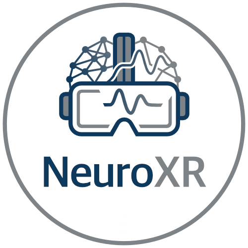

Workshop at ISMAR 2026
NeuroXR: Neurophysiological Signals, Affective Computing, and Cognition in Extended Reality explores the intersection of XR, neurotechnology, affective computing, cognitive science, neuroengineering, and human-computer interaction.
The workshop focuses on how immersive systems can sense, interpret, and respond to users’ cognitive, affective, perceptual, behavioral, and neurophysiological states.
Key themes include neurophysiological and behavioral sensing in XR, real-time user-state inference, closed-loop and adaptive XR systems, neurofeedback and biofeedback, sensory augmentation and neuroprostheses, and the ethical challenges raised by sensitive neurophysiological and behavioral data.
This hybrid workshop invites researchers and practitioners to present current research through paper presentations, discussion sessions, a keynote, expert panels, remote and in-person networking, and potential industry demonstrations.
The workshop will provide a forum for discussing emerging methods, applications, and open challenges in NeuroXR, while fostering collaboration across XR, neuroscience, affective computing, rehabilitation, assistive technology, and industry communities.
Accepted papers are planned for inclusion in the ISMAR 2026 adjunct proceedings, subject to the conference's workshop publication policy.
University of California, Santa Barbara, United States of America
We invite submissions addressing the intersection of Extended Reality (XR), neurophysiological sensing, affective computing, cognition, and adaptive immersive systems.
Topics of interest include, but are not limited to:
We seek contributions in the following formats:
These are research papers that present empirical results and make significant contributions to the field. Submissions should be between 4–6 pages in length.
These papers present interesting and potentially controversial viewpoints, as well as innovative approaches intended to stimulate discussion during the workshop.
Papers must be written in English and follow the IEEE VGTC conference format:
https://tc.computer.org/vgtc/publications/conference/
All papers should be submitted via the workshop's CMT site.
At least one author per accepted contribution must register for the ISMAR 2026 conference and attend the workshop.
| Paper Submission Deadline | 5 July 2026, 11:59 PM AoE |
| Notification of Acceptance | 17 July 2026 |
| Camera-Ready Paper Deadline | 31 July 2026 |
| Workshop Date | 6 October 2026 (Tentative) |
The workshop will be held in Bari, Italy as part of the International Symposium on Mixed and Augmented Reality (ISMAR) 2026 .